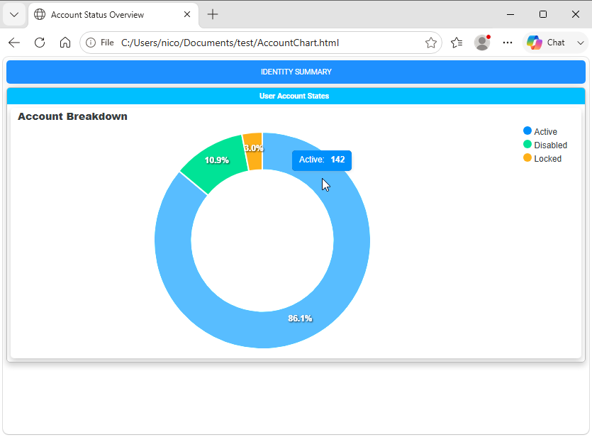
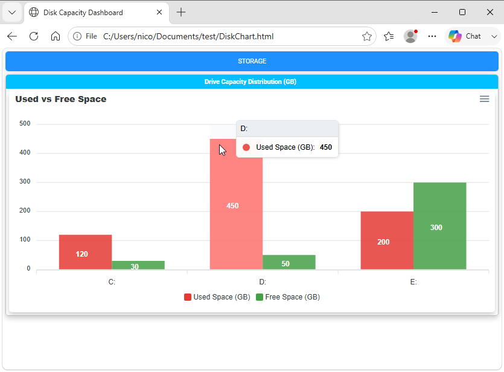
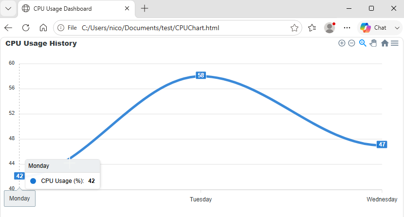
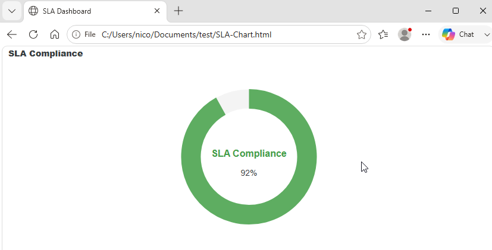
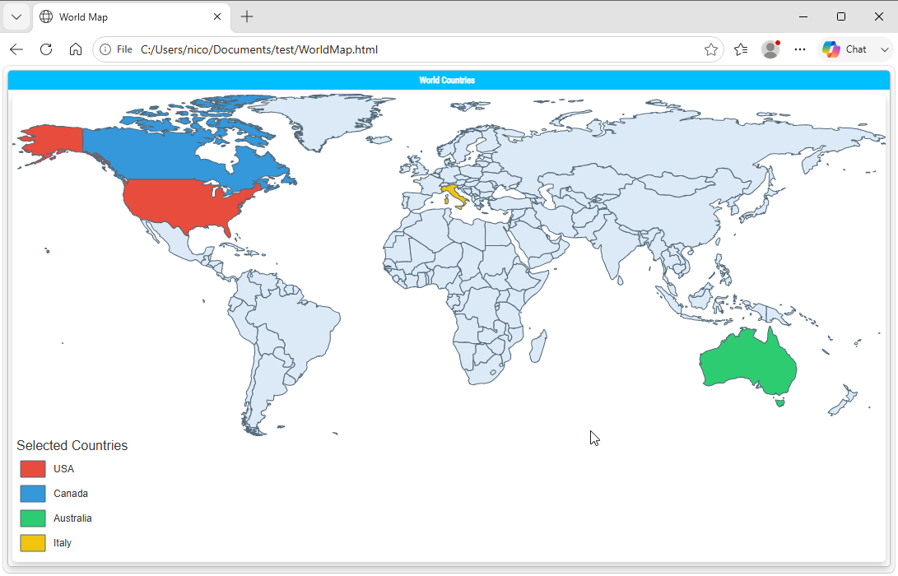
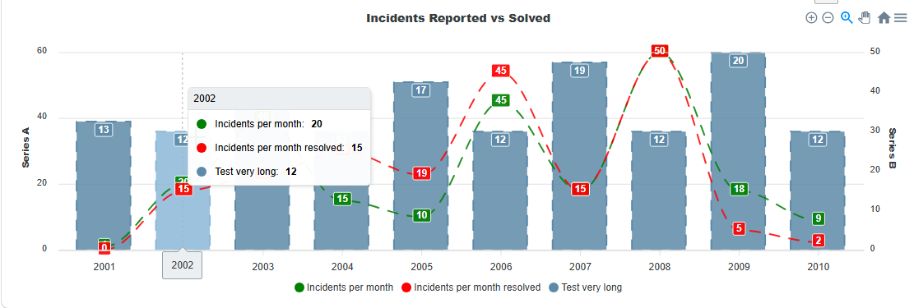
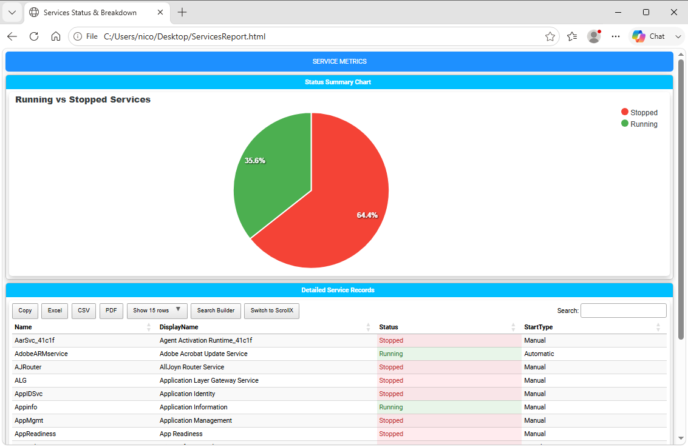

Chapter 5: Visualizing Data with Charts and Graphs
Charts and Graphs Overview
While data grids excel at granular details, visual summaries are often necessary for executive dashboards and high-level health assessments. PSWriteHTML includes native support for interactive charts powered by ApexCharts, enabling you to build dynamic bar, line, pie, donut, area, radar, and gauge charts directly from PowerShell objects.
With the New-HTMLChart cmdlet, you can turn raw numerical metrics into responsive visual representations featuring tooltips, legends, animations, and image export options.
Chart Types Overview
PSWriteHTML supports multiple chart archetypes depending on the data structure:
Chart Type |
Target Cmdlet / Parameter |
Best Used For |
|---|---|---|
Bar / Column |
|
Comparing discrete values across categories (e.g., Disk space by volume, services by state). |
Pie / Donut |
|
Displaying proportional distribution or percentages (e.g., OS breakdown, memory usage). |
Line / Area |
|
Tracking trends over continuous time series or sequential data points (e.g., CPU load history). |
Gauge |
|
Representing progress toward a single threshold or target percentage (e.g., SLA compliance score). |
Creating Your First Chart (New-HTMLChart, New-ChartDonut)
To render a chart, place one or more chart builder commands such as New-ChartBar, New-ChartLine, or
New-ChartDonut inside the New-HTMLChart script
block. The nested command determines the chart type.
Basic Donut Chart Example
The following example gathers fake account status distributions and displays them in an interactive donut chart:
# Prepare data categories, as an array of PSCustomObjects with two properties: Status and Count
$Data = @(
[PSCustomObject]@{ Status = 'Active'; Count = 142 }
[PSCustomObject]@{ Status = 'Disabled'; Count = 18 }
[PSCustomObject]@{ Status = 'Locked'; Count = 5 }
)
New-HTML -Title "Account Status Overview" -FilePath "AccountChart.html" -Show {
New-HTMLTab -Name "Identity Summary" {
New-HTMLSection -HeaderText "User Account States" {
New-HTMLPanel {
New-HTMLChart -Title "Account Breakdown" {
$Data | ForEach-Object {
New-ChartDonut -Name $_.Status -Value $_.Count
}
}
}
}
}
}
This is the result:

Fig. 10 A donut chart showing the distribution of account statuses.
Bar and Column Charts (New-ChartBar)
Bar and column charts are ideal for comparing system statistics side by side, such as disk utilization across multiple servers.
Multi-Series Bar Chart Example
$DiskData = @(
[PSCustomObject]@{ Drive = 'C:'; UsedGB = 120; FreeGB = 30 }
[PSCustomObject]@{ Drive = 'D:'; UsedGB = 450; FreeGB = 50 }
[PSCustomObject]@{ Drive = 'E:'; UsedGB = 200; FreeGB = 300 }
)
New-HTML -Title "Disk Capacity Dashboard" -FilePath "DiskChart.html" -Show {
New-HTMLTab -Name "Storage" {
New-HTMLSection -HeaderText "Drive Capacity Distribution (GB)" {
New-HTMLPanel {
New-HTMLChart -Title "Used vs Free Space" -Height 350 {
New-ChartBarOptions -Vertical
New-ChartLegend -Name 'Used Space (GB)', 'Free Space (GB)' `
-Color '#E53935', '#43A047'
foreach ($Disk in $DiskData) {
New-ChartBar -Name $Disk.Drive `
-Value $Disk.UsedGB, $Disk.FreeGB
}
}
}
}
}
}
This is the result:

Fig. 11 A multi-series bar chart comparing values across categories.
Line Charts (New-ChartLine, New-ChartAxisX)
Line charts are useful for showing how a value changes across an ordered sequence, such as CPU usage measured over several days. Use New-ChartAxisX to define the categories and New-ChartLine to provide one or more named series with matching values:
$CpuHistory = @(
[PSCustomObject]@{ Day = 'Monday'; Usage = 42 }
[PSCustomObject]@{ Day = 'Tuesday'; Usage = 58 }
[PSCustomObject]@{ Day = 'Wednesday'; Usage = 47 }
)
New-HTML -Title "CPU Usage Dashboard" -FilePath "CPUChart.html" -Show {
New-HTMLChart -Title "CPU Usage History" -Height 350 {
New-ChartAxisX -Names @($CpuHistory | ForEach-Object { $_.Day })
New-ChartLine -Name "CPU Usage (%)" `
-Value @($CpuHistory | ForEach-Object { $_.Usage }) `
-Color '#1976D2' -Curve smooth
}
}
This is the result:

Fig. 12 A line chart displaying changes across an ordered sequence.
Note that line chart have a built-in tooltip that displays the series name and value when hovering over a data point. You can also customize the line color, width, and style using parameters in New-ChartLine. Also, for line charts, a new menu appears in the top-right corner of the chart, allowing users to toggle series visibility, pan/zoom in/out, and export the chart as an image or PDF.
Radial Gauge Charts (New-ChartRadial)
Radial charts display a progress or percentage value against an implicit target of 100, making them suitable for metrics such as SLA compliance.
Use New-ChartRadial , pass the metric label to -Name
and its numeric value to -Value:
New-HTML -Title "SLA Dashboard" -FilePath "SLA-Chart.html" -Show {
New-HTMLChart -Title "SLA Compliance" -Height 350 {
New-ChartRadial -Name "SLA Compliance" -Value 92 -Color '#43A047'
}
}
This example displays an SLA compliance score of 92 percent in a radial gauge.

Fig. 13 A radial gauge chart showing an SLA compliance score.
Interactive Geographic Maps (New-HTMLMap)
For geographic visualizations, New-HTMLMap renders an
interactive map using one of PSWriteHTML’s built-in regions. Use -Map to select Poland, Usa_States,
World_Countries, or European_Union. You can customize the map with parameters such as -AnchorName, -AreaTitle,
-PlotTitle, -FillColor, -StrokeColor, -StrokeWidth, -ShowAreaLegend, and -ShowPlotLegend. For data-driven
area colors or plotted values, use -MapSettings to provide the map areas, plots, and legend configuration.
The following example creates a simple interactive world map:
New-HTML -Title "World Map" -FilePath "WorldMap.html" -Online -Show {
New-HTMLSection -HeaderText "World Countries" {
New-HTMLPanel {
New-HTMLMap -Map "World_Countries" -AnchorName "WorldMap" -AreaTitle "Selected Countries" -ShowAreaLegend -FillColor "#DCEAF7" -StrokeColor "#536878" -StrokeWidth 1 {
New-MapArea -Area "US" -Value 1 -Tooltip { "United States" }
New-MapArea -Area "CA" -Value 2 -Tooltip { "Canada" }
New-MapArea -Area "AU" -Value 3 -Tooltip { "Australia" }
New-MapArea -Area "IT" -Value 4 -Tooltip { "Italy" }
New-MapLegendSlice -Type area -Label "USA" -MinimumValue 1 -MaximumValue 1 -FillColor "#E74C3C"
New-MapLegendSlice -Type area -Label "Canada" -MinimumValue 2 -MaximumValue 2 -FillColor "#3498DB"
New-MapLegendSlice -Type area -Label "Australia" -MinimumValue 3 -MaximumValue 3 -FillColor "#2ECC71"
New-MapLegendSlice -Type area -Label "Italy" -MinimumValue 4 -MaximumValue 4 -FillColor "#F1C40F"
}
}
}
}
That renders nicely:

Fig. 14 An interactive world map rendered with PSWriteHTML.
Chart Styling and Customization Options
New-HTMLChart and its nested chart builder commands expose extensive options to match corporate branding or dashboard requirements:
Color Schemes & Themes
-Color: Pass a hex color to
New-ChartBar,New-ChartPie, or another chart builder to customize a series or slice. If not specified, a default color will be used.New-ChartTheme -Palette: Select a pre-built color palette (e.g.,
palette1throughpalette10).
Sizing and Layout
-Height: Set height explicitly in pixels (e.g.,
-Height 400).-Width: Set width explicitly in pixels (e.g.,
-Width 600). If omitted, the chart will expand to fill its container.New-ChartLegend -LegendPosition: Control where dataset legends appear (
top,bottom,left,right).New-ChartSpark: Creates a minimalist inline chart without axes or legends, ideal for executive metric summary cards.

Fig. 15 A combined chart view with multiple visualizations in one report.
You can also combine multiple charts into a single one.
Combining Charts and Tables
For comprehensive reporting, you can place charts and DataTables side-by-side or stacked inside the same section to provide both high-level visual summaries and actionable underlying records.
Full Operational Example: Service Distribution Report
# 1. Collect Local Service Data
$Services = Get-Service
$GroupedServices = $Services | Group-Object Status | Select-Object @{N='Status';E={$_.Name}}, Count
# 2. Build Integrated Report
New-HTML -Title "Services Status & Breakdown" -FilePath "$env:USERPROFILE\Desktop\ServicesReport.html" -Show {
New-HTMLTab -Name "Service Metrics" {
# Top Row: Chart Summary
New-HTMLSection -HeaderText "Status Summary Chart" {
New-HTMLPanel {
New-HTMLChart -Title "Running vs Stopped Services" -Height 300 {
$GroupedServices | ForEach-Object {
$Color = if ($_.Status -eq 'Running') { '#4CAF50' } else { '#F44336' }
New-ChartPie -Name $_.Status -Value $_.Count -Color $Color
}
}
}
}
# Bottom Row: Granular Data Grid
New-HTMLSection -HeaderText "Detailed Service Records" {
New-HTMLPanel {
New-HTMLTable -DataTable ($Services | Select-Object Name, DisplayName, Status, StartType -First 25) {
New-TableCondition -Name 'Status' -ComparisonType string -Operator eq -Value 'Running' -BackgroundColor '#E8F5E9' -Color '#2E7D32'
New-TableCondition -Name 'Status' -ComparisonType string -Operator eq -Value 'Stopped' -BackgroundColor '#FFEBEE' -Color '#C62828'
}
}
}
}
}
The result is a dashboard that combines a pie chart for service status with a detailed service status table below it:

Fig. 16 A service-status report combining a pie chart with a detailed table.
Note
For an interactive example that correlates chart selections with table rows using -DataTableID, -ID, and -ColumnID,
see Correlating Tables and Charts with Events on Chapter 11.
Chart Best Practices
Avoid Overcrowding Categories: Pie and donut charts become unreadable with more than 7–8 slices. Group small items into an “Other” category prior to rendering.
Explicit Colors for Statuses: Consistently assign red/green/yellow hex values for status indicators (e.g., pass/fail or warning/critical states) rather than relying on random theme colors.
Set Fixed Heights: Specifying
-Heightensures layout consistency across different desktop monitor resolutions.
Next Chapter: Chapter 6: Organizing Content with Tabs, Sections, and Panels